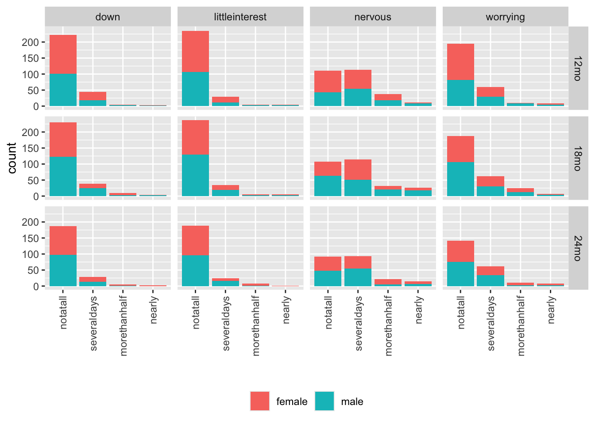
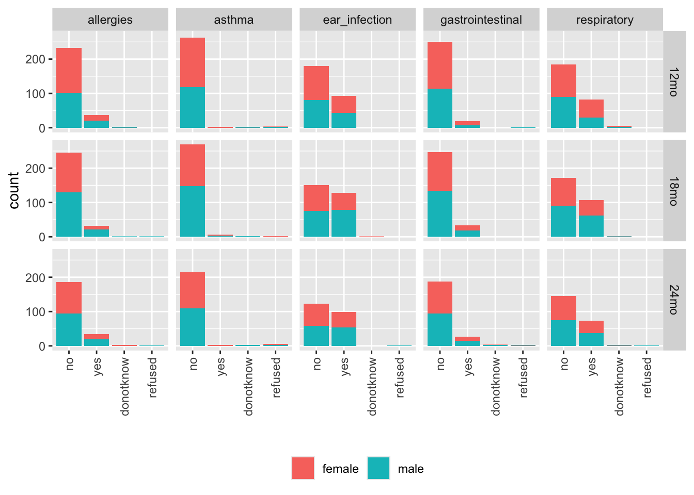

Health visualizations
# Load home_visit_df if not in environment
if (!("health_df" %in% ls())) {
targets::tar_load(health_df, store="../_targets")
}Feeding
xtabs(formula = ~ age_group + feeding_breastfeed, data = health_df)## feeding_breastfeed
## age_group donotknow no refused yes
## 12mo 0 7 0 171
## 18mo 1 9 0 163
## 24mo 0 6 1 137
health_df %>%
dplyr::select(child_sex, feeding_solidfood_age) |>
dplyr::filter(feeding_solidfood_age < 12) |>
ggplot() +
aes(x = feeding_solidfood_age, color = child_sex, fill = child_sex) +
geom_histogram(bins = 14) +
theme(legend.title = element_blank())
Figure 11: Age at introduction of solid foods
Clearly, there are some impossible values here.
health_df |>
dplyr::select(participant_id, feeding_solidfood_age) |>
dplyr::filter(feeding_solidfood_age > 12 | feeding_solidfood_age < 3) %>%
knitr::kable(format = 'html')| participant_id | feeding_solidfood_age |
|---|---|
| e5M1S1R3A | 0 |
| a9M6Q1C1A | 999 |
A preliminary look at feeding_comments_feeding shows that there are some names mentioned.
We should consider flagging these in the QA process.
Sleeping position
These data only focus on child_sleeping_position.
Other sleeping data are in the screening questionnaire.
sleeping_pos <- health_df |>
dplyr::select(child_sex, age_group, child_sleeping_position) |>
dplyr::filter(!is.na(child_sleeping_position))
xtabs(formula = ~ child_sleeping_position + age_group, data = sleeping_pos)## age_group
## child_sleeping_position 12mo 18mo 24mo
## back 168 168 137
## changed 3 0 1
## donotknow 0 1 0
## other 2 1 0
## refused 0 0 1
## side 1 0 4
## stomach_down 0 1 0
## stomach_side 4 2 1Smoking/drinking
smoking_drinking <- health_df |>
dplyr::select(age_group,
child_sex,
contains("smoking"),
contains("drinking")
)
xtabs(formula = ~ pregnant_smoking + pregnant_drinking, smoking_drinking)## pregnant_drinking
## pregnant_smoking no refused yes
## donotknow 1 0 0
## no 388 1 100
## refused 0 1 0
## yes 1 0 1
xtabs(formula = ~ smoking_house + smoking_car, smoking_drinking)## smoking_car
## smoking_house donotknow no refused yes
## donotknow 1 0 0 0
## no 3 478 0 1
## refused 0 3 1 0
## yes 0 7 0 1
smoking_drinking |>
dplyr::select(comments_smoking) |>
dplyr::filter(!is.na(comments_smoking)) |>
knitr::kable(format = 'html')| comments_smoking |
|---|
| D8 not asked/ answered, as questionnaire did not have this question included. |
| Was not in the paper questionnaire |
| Family does not have a car. |
| Family doesn’t have a car |
| Vape with THC and THC so!etimes smoke when he’s asleep |
| (Changed answer for D1 from "refused" to "no" during QA. Experimenter had accidentally pressed wrong answer) |
| Dad vapes in the house |
| (QA Note: D8 was not answered during the home visit. Changed answer from "No" to "Don’t Know" as a result) |
| Only smoking is at grandma’s house. Grandma smokes. |
| Smoked half an FT (?) every other day until she found out about pregnancy at 5 weeks; grandmother smokes inside her bedroom |
| Dad smokes but not in the house |
| Husband smokes occasionally |
| smoking stopped after pregnancy |
| Vapes inside the house |
smoking_drinking |>
dplyr::select(comments_drinking) |>
dplyr::filter(!is.na(comments_drinking)) |>
knitr::kable(format = 'html')| comments_drinking |
|---|
| 8 months drank 1 glass of wine |
| Only drank before knowing she was pregnant |
| Drank before knowing she was pregnant. |
| E4- Indicated she drank one glass of wine every two weeks |
| Sip of champagne one |
| Mom said she stopped drinking when she realized she was pregnant. |
| 8 months drank 1 glass of wine |
| Had one drink when unaware of pregnancy and night before before water broke |
| glass of champagne during new years |
| One glass of wine early in pregnancy |
| A sip here and there to try, no full drinks while pregnant |
| Entire pregnancy is maybe around 5 drinks total |
| Drank one Margarita when 3 weeks pregnant |
| Had half an alcoholic beverage during second half of second trimester |
| Had a drink before she found out she was pregnant. Towards the end of the pregnancy at a birthday party had less than 1 drink. |
| Mom only drank one time during pregnancy (before mom knew she was pregnant) at a wine excursion |
| Had about five drinks total during pregnancy |
| She had a few sips of wine throughout the entire pregnancy. Maybe twice total during the pregnancy. |
| Drank alocoholic beverages prior to knowing she was pregnant. |
| once a month a glass of wine |
| Mom drank about one drink per week on average (would never be three per week) in second 3 months of pregnancy; closer to two drinks per week on average in third 3 months |
| Not since knew pregnant |
| 8 weeks in found out |
| Drank during first month of pregnancy |
| only had on average two drinks a week during the first month of the pregnancy |
| Maybe a sip of wine one time |
| Occassional sips of wine, but never a full drink |
| Very very occasional |
| Maybe one drink during pregnancy |
| Mom had two glasses of wine during her last trimester but it wasn’t an average week |
| had the occasional glass of red wine |
| E2. Parent had 2 drinks in the first 3 months of pregnancy total (not weekly) prior to finding out she was pregnant |
| Only a glass of red wine |
| During the first 3 weeks before she knew she was pregnant |
| Took a sip whisky in third trimester |
| only during 3rd trimester |
| Drank before she knew she was pregnant |
| Answered by mom who carried the child she did not participate in natural play |
| One or two before found out about pregnancy |
| Had 1 glass of wine at 9.5 months pregnant. |
| Only had one drink |
| First 5 weeks, unaware of pregnancy |
| Drank the first five weeks when she did not know about her pregnancy |
| Just during the last weeks of her maybe one glass of wine |
Patient Health Questionnaire (PHQ-4)
phq4 <- health_df |>
dplyr::select(child_sex, age_group, contains("phq4_"))
names(phq4) <- gsub(pattern = "phq4_",
replacement = "",
names(phq4))
phq4 |>
tidyr::pivot_longer(!c('child_sex', 'age_group'), names_to = "question", values_to = "response") |>
dplyr::filter(!is.na(response)) |>
dplyr::mutate(response = factor(response,
c("notatall",
"severaldays",
"morethanhalf",
"nearly")),
ordered = TRUE) |>
ggplot() +
aes(x = response, fill = child_sex) +
geom_bar() +
facet_grid(cols = vars(question), rows = vars(age_group)) +
scale_x_discrete(guide = guide_axis(angle = 90)) +
xlab("") +
theme(legend.position = "bottom", legend.title = element_blank())

Figure 12: PHQ4 responses by age group and child sex
Child health
Overall rating
child_health_rating <- health_df |>
dplyr::select(child_sex, age_group, child_health) |>
dplyr::filter(!is.na(child_health)) |>
dplyr::mutate(child_health = factor(child_health,
c("poor",
"fair",
"good",
"verygood",
"excellent",
"donotknow",
"refused"),
ordered = TRUE))
xtabs(formula = ~ child_health + age_group, data = child_health_rating)## age_group
## child_health 12mo 18mo 24mo
## poor 0 0 0
## fair 1 1 1
## good 10 9 10
## verygood 47 40 33
## excellent 120 122 99
## donotknow 0 1 0
## refused 0 0 1Recent vaccination
recent_vax <- health_df |>
dplyr::select(child_sex, age_group, child_vaccination) |>
dplyr::filter(!is.na(child_vaccination))
xtabs(formula = ~ child_vaccination + age_group, data = recent_vax)## age_group
## child_vaccination 12mo 18mo 24mo
## donotknow 0 2 3
## no 93 113 105
## yes 85 58 36Seen medical specialist
seen_specialist <- health_df |>
dplyr::select(child_sex, age_group, child_medical_specialist) |>
dplyr::filter(!is.na(child_medical_specialist))
xtabs(formula = ~ child_medical_specialist + age_group, data = seen_specialist)## age_group
## child_medical_specialist 12mo 18mo 24mo
## donotknow 0 1 1
## no 91 76 59
## refused 0 0 1
## yes 87 96 83Manual inspection shows some possible identifying information (names) in the comments.
Illnesses and allergies
illness_allergy <- health_df |>
dplyr::select(child_sex, age_group, contains("illness_"))
names(illness_allergy) <- gsub(pattern = "illness_",
replacement = "",
names(illness_allergy))
illness_allergy |>
tidyr::pivot_longer(!c('child_sex', 'age_group'),
names_to = "type",
values_to = "response") |>
dplyr::filter(!is.na(response)) |>
dplyr::mutate(response = factor(response,
c("no", "yes", "donotknow", "refused"))) |>
ggplot() +
aes(x = response, fill = child_sex) +
geom_bar() +
facet_grid(cols = vars(type), rows = vars(age_group)) +
scale_x_discrete(guide = guide_axis(angle = 90)) +
xlab("") +
theme(legend.position = "bottom", legend.title = element_blank())